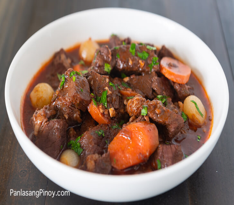
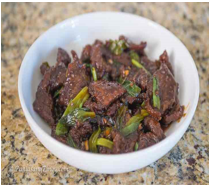
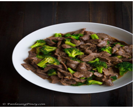
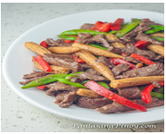

Red Wine Beef Stew
Ingredients:
- 2 lbs. beef chuck cubed
- 1 1/2 cup red wine
- 3 cups beef broth
- 4 strips bacon chopped
- 15 pieces pearl onion
- 3 ounces tomato paste
- 1 piece carrot sliced
- 5 sprigs thyme
- 1 piece onion chopped
- 6 cloves garlic minced
- Salt and pepper to taste
Instructions:
- Sear bacon in a cooking pot until fat gets extracted.
- Add onion. Cook for 25 seconds while stirring.
- Add minced garlic. Sauté for 30 seconds.
- Put the beef into the pot and then continue to cook until the color turns light brown.
- Add tomato paste and then stir.
- Pour red wine and beef broth into the pan. Stir and let boil.
- Add carrot and thyme. Cover the pot and continue to cook between low to medium heat for 2 to 3 hours or until beef gets tender.
- Put the pearl onions into the pot. Cook for 5 minutes.
- Season with salt and ground black pepper.
- Transfer to a serving plate. Serve. Share and enjoy!

Mongolian Beef Recipe
Ingredients:
- 1 lb. sandwich steak or flank steak sliced thinly
- 5 tablespoons cornstarch
- 1 thumb ginger minced
- 5 cloves garlic minced
- 1/2 cup water
- 5 tablespoons dark soy sauce
- 10 tablespoons brown sugar
- 1 cup green onions chopped
- ½ teaspoon salt
- ¼ teaspoon ground black pepper
- 3/4 cup vegetable oil
Instructions:
- Season beef with salt and pepper. Mix using your clean hands.
- Add 4 tablespoons cornstarch. Continue to mix until all ingredients are well blended. Let it sit for 12 to 15 minutes so that the meat can absorb the flavors from the seasonings.
- Heat oil on a wok or pan. Fry one side of the beef for a maximum of 1 minute. Turn it over to fry the other side using the same maximum time. Remove the fried beef from the wok and arrange in a plate lined with paper towels. Set aside.
- Start to make the Mongolian beef sweet sauce by pouring 3 tablespoons of oil used to fry beef on a wok. Quickly saute garlic and ginger.
- Pour soy sauce. Let boil.
- Add brown sugar. Stir until sugar dissolves completely.
- Pour water. Stir and let boil. Continue to cook in medium heat for 3 minutes.
- Combine 1 tablespoon of cornstarch with 1/4 cup water. Stir until well blended. Pour half of the mixture into the sauce. Stir until sauce thickens. Add the remaining cornstarch mixture if the sauce needs to be thickened more. Pour sauce into a bowl. Set aside.
- Heat 2 tablespoons of the oil used to fry beef on a clean wok. Stir fry the fried beef for 30 seconds. Add half of the green onions. continue to stir fry for a minute.
- Pour Mongolian beef sauce into the wok. Stir-fry until the beef slices are completely coated with sauce. Add remaining green onions. Continue to cook for 1 minute.
- Transfer to a serving plate. Serve!
- Share and enjoy!
Beef Kaldereta sa Gata with Peanut Butter
Ingredients:
- 2 lbs. beef chuck cubed
- 8 ounces tomato sauce
- 2 cups beef broth
- 2 cups coconut mlk
- 3 tablespoons peanut butter
- 1 piece onion chopped
- 5 cloves garlic chopped
- 2 pieces potato cubed
- 1 piece red bell pepper sliced
- 1 piece green bell pepper sliced
- 3 pieces Thai chili pepper optional
- 3 tablespoons cooking oil
- Salt and ground black pepper to taste
Instructions:
- Heat oil in a cooking pot.
- Saute onion, garlic, and tomato. Continue to saute until onion and tomato softens.
- Add beef. Cook until it turns light brown.
- Pour tomato sauce and beef broth. Let boil. Cover and cook in low heat until the sauce reduces to half.
- Pour coconut milk into the pot. Add Thai chili peppers. Cover and continue to boil until the beef gets tender.
- Add peanut butter. Stir.
- Add the potato.Cover and cook for 10 minutes.
- Put the bell peppers into the pot. Cover and cook for 12 minutes.
- Season with salt and ground black pepper.
- Transfer to a serving plate and serve with warm white rice. Share and enjoy!

Bulalo or shank soup
Ingredients:
- 7.5 lbs. Beef shank bulalo
- 1 Knorr beef cube
- 1 bunch Napa cabbage pechay Baguio
- 2 pieces sweet corn divided into 3 parts
- 15 to 20 pieces long green beans Baguio beans
- 4 medium yellow onion wedged
- 1 tablespoon whole peppercorn
- 3 tablespoons fish sauce patis
- 12 to 15 cups water
Instructions:
- Boil water in a large cooking pot.
- Add beef shank. Cover the pot and boil for 15 minutes.
- Scrape the scums out of the cooking pot. Add whole peppercorn and onion. Cover the pot. Continue to cook in low heat for 2 to 3 hours or until the beef becomes tender. Note: you can use a pressure cooker to tenderize the meat. It should only take around 45 minutes.
- Scoop the fats (oil) floating on top of the soup and discard.
- Add corn. Cover and cook for 15 minutes.
- Add long green beans (Baguio beans) and season with fish sauce (patis).
- Arrange the fresh Napa cabbage (pechay baguio) on the serving bowl. Pour hot broth and arrange the beef shank, corn, and long green beans in the bowl.
- Serve hot. Share and enjoy!

Beef with Broccoli
Ingredients:
- 1 lb. beef sliced into thin pieces
- 2 cups broccoli cut into florets
- 2 teaspoons ginger minced
- 2 cloves garlic minced
- 1 tablespoon cornstarch
- 1/2 to 3/4 cups water optional
- ¼ cup cooking oil
- Salt and ground black pepper to taste
Marinade Ingredients
- 1/4 cup oyster sauce
- 1 tablespoon Knorr Liquid Seasoning
- 1/2 teaspoon Sesame oil optional
- 3 tablespoons cooking wine optional
- 1 teaspoon granulated white sugar
Instructions:
- Combine beef, oyster sauce, Knorr Liquid Seasoning, Sesame oil, cooking wine, and sugar in a bowl. Mix well. Marinate beef for 15 minutes. Add cornstarch and mix to blend with all the ingredients. Set aside.
- Heat 2 tablespoons cooking oil in a cooking pot. Sauté ginger and garlic. Add broccoli before the garlic starts to brown. Stir-fry for 1 to 2 minutes. Remove from the pot. Set aside.
- Pour the remaining oil into the pot. Add marinated beef once the oil gets hot. Stir-fry until the beef browns. You can add water to tenderize the beef further. If water is added, let it boil and stir as it evaporates. Add salt and ground black pepper to taste.
- Put the cooked broccoli into the pot with the beef. Stir-fry for 3 minutes.
- Transfer to a serving plate. Serve!

Beef and Baby Corn Stir Fry Recipe
Ingredients:
- 3/4 lbs beef sirloin sliced into thin strips
- 15 pieces baby corn
- 1 1/2 cups snap peas
- 1 small red bell pepper sliced into strips
- 1/4 cup light soy sauce
- 3 to 4 tablespoons oyster sauce
- 1 1/2 tablespoons cornstarch
- 1/2 teaspoon ground black pepper
- 1/2 teaspoon salt
- 3 table spoon Shoaxing cooking wine
- 3 tablespoon cooking oil
- Arrange beef in a bowl. Add 1/4 teaspoon ground black pepper, soy sauce, and oyster sauce. Mix well.
- Add the cornstarch. Make sure all the ingredients are well blended. Set aside.
- Meanwhile, heat a wok or a pan. Pour-in the cooking oil. Once the oil gets hot, stir-fry the baby corn, snap peas, and red bell pepper for 3 to 5 minutes.
- Add salt and remaining pepper. Pour the cooking wine in the wok and stir-fry for 3 minutes.
- Transfer the vegetables to a plate. Set aside.
- Using the remaining cooking oil (add a tablespoon of cooking oil if needed), stir fry the marinated beef for 3 to 4 minutes. Add the stir-fried vegetables and continue to stir-fry for another 2 to 4 minutes.
- Transfer to a serving plate. Serve.
- Share and enjoy!